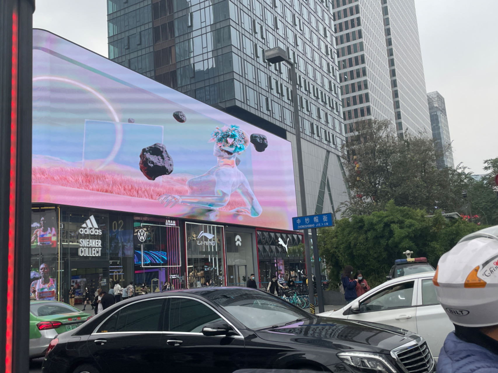
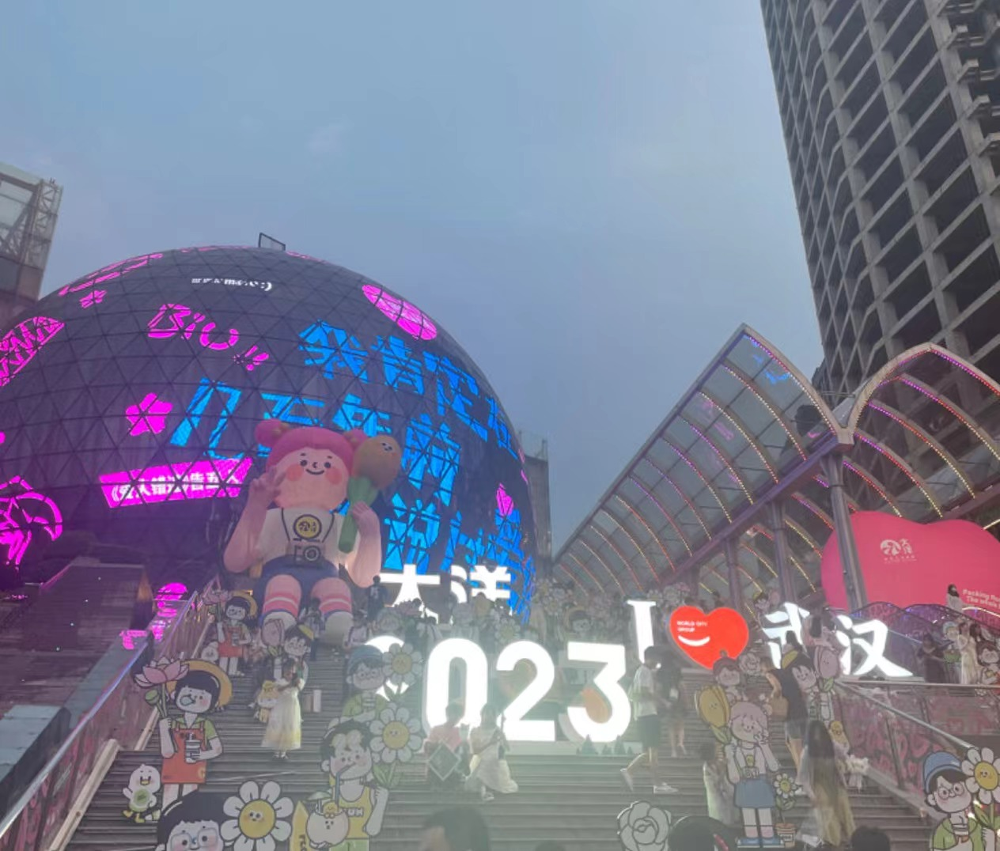

About Travel
Tourism is the Road of Knowledge.I enjoy traveling,and every time I go to a new place,I always get new feelings.

This photo was taken on Chunxi Road in Chengdu.Chengdu is a city with a comfortable climate and full of human kindness.
成都
This photo was taken at the famous scenic spot Wenheyou in Changsha.The city is composed of Sexytea,crayfish and secretroom escape.
长沙
This photo was taken on Nanchang Street in Wuxi.Wuxi is a picturesque city surrounded by mountains and rivers.
无锡

This photo was taken on Jianghan Road in Wuhan.Wuhan is a city that thrives on water,with a variety of delicious food。
武汉